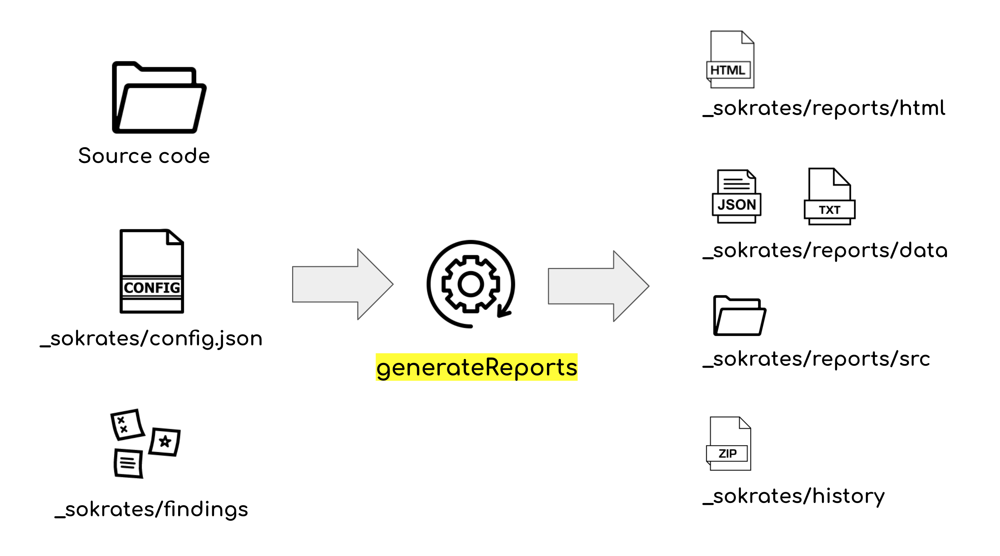
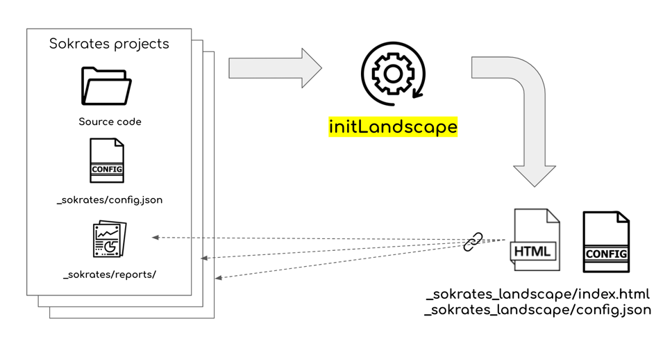
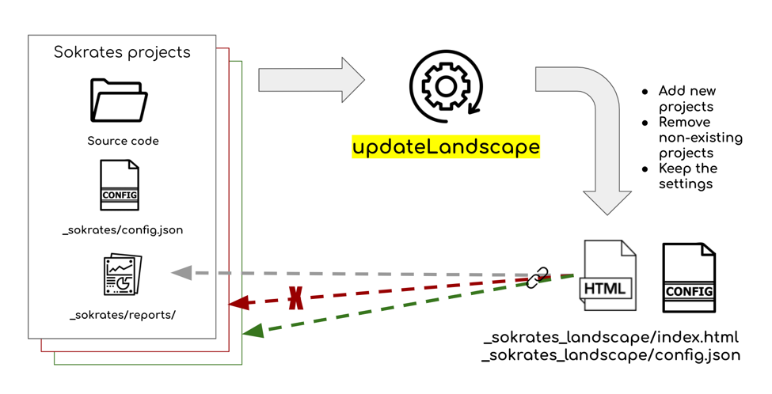

Appendix: Command Line Interface (CLI)
Sokrates command-line interface (CLI) includes five commands:
- init,
- generateReports,
- updateConfig,
- initLandscape, and
- updateLandscape.
init command
The init command generates a new Sokrates configuration file based on standard source code conventions.
java -jar sokrates-LATEST.jar init [options]
-srcRoot <arg> [OPTIONAL] the path to source code root folder (default is <currentFolder>)
-confFile <arg> [OPTIONAL] the path to configuration file (default is "<currentFolder>/_sokrates/config.json")
Figure 1: The init command generates a new Sokrates configuration file based on standard source code conventions.
generateReports command
The generatesReports command generates HTML reports and exports data files.
java -jar sokrates-LATEST.jar generateReports [options]
-confFile <arg> [OPTIONAL] the path to configuration file (default is "<currentFolder>/_sokrates/config.json")
-outputFolder <arg> [OPTIONAL] the folder where reports will be stored (default is "<currentFolder>/_sokrates/reports/")
-reportAll [DEFAULT] generate all reports
-reportData save only data in JSON and text formats (stored in <outputFolder>/data)
-reportOverview generate only the report describing the overview of files in scope (stored in <outputFolder>/html/SourceCodeOverview.html)
-reportDuplication generate only the duplication report (stored in <outputFolder>/html/Duplication.html)
-reportLogicalDecomposition generate only the components logical decomposition report (stored in <outputFolder>/LogicalDecomposition.html)
-reportFileSize generate only the file size report (stored in <outputFolder>/html/FileSize.html)
-reportUnitSize generate only the unit size report (stored in <outputFolder>/html/UnitSize.html)
-reportConditionalComplexity generate only the conditional complexity report (stored in <outputFolder>/html/ConditionalComplexity.html)
-reportConcerns generate only the concerns report (stored in <outputFolder>/html/Concerns.html)
-reportMetrics generate only the metrics overview report (stored in <outputFolder>/html/Metrics.html)
-reportControls generate only the controls report (stored in <outputFolder>/html/Controls.html)
-reportFindings generate only the findings report (stored in <outputFolder>/html/Findings.html)
-internalGraphviz use internal Graphviz library (by default external dot program is used, you may specify
the external dot path via the system variable GRAPHVIZ_DOT)
Figure 2: The generatesReports command generates HTML reports and exports data files.
updateConfig command
The updateConfig updates a configuration file and completes missing fields. You can also use the updateConfig command to upgrade your configuration file to the latest version.
java -jar sokrates.jar updateConfig [options]
-confFile <arg> [OPTIONAL] the path to configuration file (default is "<currentFolder>/_sokrates/config.json"
-setDescription <arg> [OPTIONAL] sets a project description
-setLogoLink <arg> [OPTIONAL] sets a project logo link
-setName <arg> [OPTIONAL] sets a project name
-skipComplexAnalyses [OPTIONAL] skips complex analyses (duplication, dependencies, file caching)
Figure 3: The updateConfig updates a configuration file and completes missing fields.
initLandscape command
The initLandscape creates a Sokrates Landscape report and an initial landscape configuration file for landscape analyses.
java -jar sokrates.jar initLandscape [options]
-analysisRoot <arg> the path to the root folder of multiple Sokrates projects, scans all subfolders for Sokrates reports and configurations. The folder where landscape reports will be stored (default is "<currentFolder>/_sokrates_landscape/reports/".
-confFile <arg> [OPTIONAL] the path to landscape configuration file (default is "<currentFolder>/_sokrates_landscape/config.json"
Figure 4: The initLandscape creates a Sokrates Landscape report and an initial landscape configuration file for landscape analyses.
updateLandscape command
The updateLandscape updates a Sokrates Landscape report, adding new and removing non-existent projects without changing other settings in the landscape configuration file.
java -jar sokrates.jar updateLandscape [options]
-analysisRoot <arg> the path to the root folder of multiple Sokrates projects, scans all subfolders for Sokrates reports and configurations. The folder where landscape reports will be stored (default is "<currentFolder>/_sokrates_landscape/reports/".
-confFile <arg> [OPTIONAL] the path to landscape configuration file (default is "<currentFolder>/_sokrates_landscape/config.json"
Figure 5: The updateLandscape updates a Sokrates Landscape report, adding new and removing non-existent projects without changing other settings in the landscape configuration file.
Example: A Getting Started Video
See a 5 minutes video on using Sokrates CLI to analyze source code of Sokrates:
Example: Running Sokrates as a Batch Process
The following bash script illustrates a more complex scenario of using multiple commands of the Sokrates CLI.
# remove the temporary analysis folder
rm -rf analysis
# remove the reports folder
rm -rf reports
# create temporary analysis folder
mkdir analysis
mkdir analysis/_sokrates
#create the reports folder
mkdir reports
# copy Sokrates configuration file to the temporary folder
cp config.json analysis/_sokrates
cd analysis
# install the latest version of Sokrates
curl -O https://d2bb1mtyn3kglb.cloudfront.net/builds/sokrates-LATEST.jar
# checkout the code
git clone https://github.com/zeljkoobrenovic/sokrates.git
mv temp-git-dir/* .
rm -rf temp-git-dir
# run analysis
java -jar -Xmx10g sokrates-LATEST.jar generateReports -reportAll
# copy generated reports to the reports folder
cp -r _sokrates/reports/* ../reports
cd ..
# remove the temporary analysis folder
rm -rf analysisFigure 5: A bash script illustrating a more complex scenario of the Sokrates command-line interface.